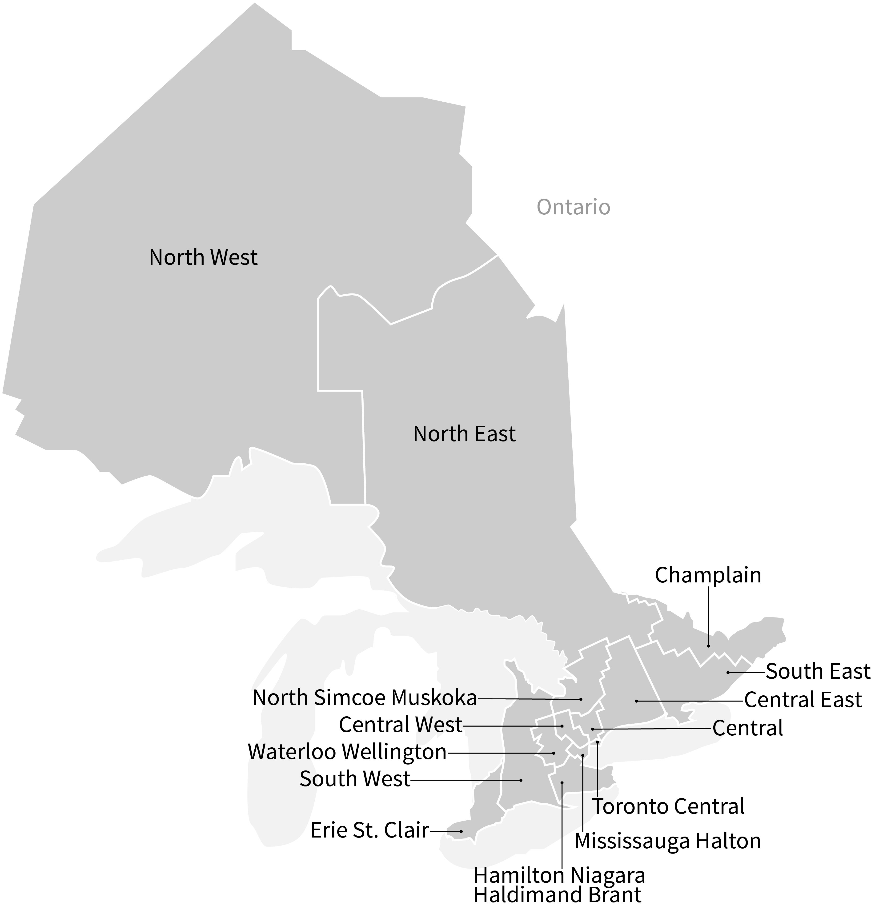

Cancer in Ontario
What is Cancer?
Cancer refers to a group of diseases with abnormal cell growth, with the potential to spread to other parts of the body. It is not a single disease. It describes a group of more than 200 individual diseases, each with its own unique causes, risk factors and care pathways.
It takes more than one physician or clinic to treat and control cancer; it takes an entire healthcare team in a variety of institutions and care settings.
Our goal is to reduce the number of people diagnosed with cancer and to ensure that patients receive high quality care at every step in their care. That means we have to attend to the entire disease pathway for each cancer beginning with prevention through to palliative care.
What is the Cancer Journey?
The cancer system begins with prevention and health promotion, with the ultimate goal being to prevent cancer in the first place. The detection and care of cancer patients involves every area of the healthcare system in some way.
To create a system of cancer control and care that is organized and delivered to respond to the needs of the population and of cancer patients, it is equally critical to ensure that each phase of care works seamlessly together. We strive to constantly improve every aspect of cancer, from prevention through to palliative care.
-
Prevention
The best way to get the upper hand on cancer is by preventing it in the first place.
-
Screening
Cancer screening detects pre-cancerous changes, or cancer at an early stage when there is a better chance of treating it successfully. Screening is for individuals who do not have any cancer symptoms.
-
Diagnosis
The diagnosis of cancer is the beginning of a personal journey, and is one of the first steps taken in the cancer care system.
-
Treatment
Once a diagnosis has been made, and cancer has been confirmed, the next part of the cancer journey is the treatment phase. There are three main ways to treat cancer: surgery, cancer drugs (chemotherapy), and radiation. While surgery entails the removal of tumours, the goal of chemotherapy and radiation is to stop or slow the growth of cancer cells.
-
Recovery/Survivorship
The most positive indication that advances in treatment, prevention and screening are working is that survival rates for the most common cancers have improved significantly. Much more work, however, needs to be done to improve survival from other types of more aggressive cancers. When treatment for these cancers is unsuccessful, patients move to receiving end-of-life care.
End-of-life care
Palliative (or end-of-life) care is a holistic approach to active and supportive care for patients and their families facing a life-threatening illness. The aim is to prevent and ease suffering, while promoting an excellent quality of life right up until the end of life
How are Regional Services Organized?
The cancer system is organized into Regional Cancer Programs (RCPs) corresponding with the province's 14 Local Health Integration Networks (LHIN). RCPs are networks of healthcare providers, including regional cancer centres, and stakeholders including patient groups involved in providing cancer prevention, screening, and diagnostic and treatment services in the LHIN.
How many Ontarians are affected by cancer?
The number of people who are get cancer (incidence) and the number who die from cancer (mortality) varies by age, cancer type and a host of other factors. In the following visualizations, incidence and mortality are measured using age-standardized rates. A rate is the number of new events (ex. dying from cancer) per population at risk in a given time period. For this dataset, the rates are measured per 100,000 person-years, and are age-adjusted to the 2011 Canadian population.
Incidence and Mortality Rates for All Cancers in Ontario
These graphs give an overview of how cancer incidence and mortality changes over time, by age and sex. Hover over the points to view more information.

Incidence and Mortality Rates by Cancer Site and Region
These heatmaps display cancer incidence and mortality rates by cancer site and region of Ontario. Hover over the cells to view more details, use the filters to subset the data, and click on the rows and columns to sort the data.

Terminology
- Cancer site refers to the location in the body of the initial (primary) cancer
- Region refers to either Ontario or one of the Local Health Integration Networks (LHINs) in Ontario. The Ontario statistics excluded cancer cases of unknown residence. Therefore, provincial statistics may not match the true counts and rates published elsewhere.
- Sex refers to a person's sex as recorded on health records, rather than their gender identity.
- Age refers to the age at diagnosis for the cancer and are categorized differently for different cancer sites.
- Year refers to the calendar year in which a cancer was diagnosed.